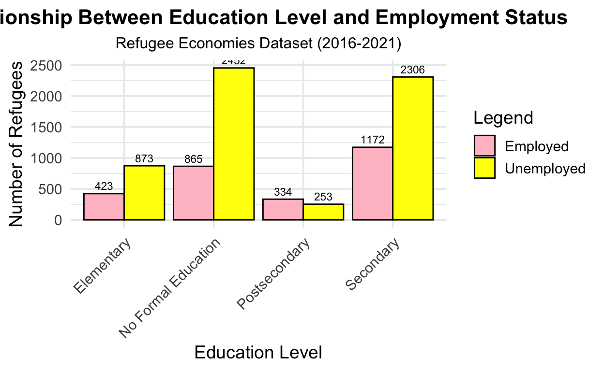
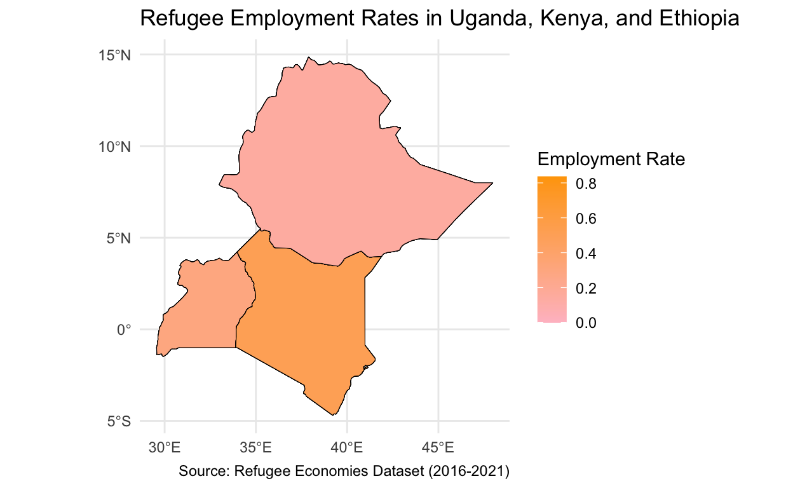

My final project
Many people believe that education is essential to refugees’ effective assimilation into host countries. However, systemic barriers and different levels of education among refugees often influence their access to employment opportunities. This report attempts to addresses the question: “What impact does refugee education have on their employment opportunities in host countries?”
The hypothesis is that refugees with higher education levels are more likely to find employment than those with lower education levels. Understanding this relationship is important for policymakers and organizations aiming to design effective education and employment programs. Evidence from this analysis could provide insights into how investments in refugee education contribute to economic integration and independence.
The data for this report comes from the Refugee Economies Dataset, collected between 2016 and 2021 across Uganda, Kenya, and Ethiopia. This dataset includes information on demographic, education, and employment characteristics of nearly 9,000 refugees. Because it looks at data from a specific time period across several people, the research design is cross-sectional.
Employment status (either employed or unemployed) is the dependent variable. Whether refugees are now working for a living is captured by this variable. The independent variable is the degree of education which will be classified as no formal education (0 years of education), elementary(1-6 years), secondary(7-12), or post-secondary(more than 12). This variable is determined from the reported years of education.
library(dplyr)
library(tidyverse)
library(tidyr)
# Load the data and assign it to `refugee`.
getwd()[1] "/Users/madalynn/ps270-final-project"## Assign Variables and create a boxplot that shows employment status for 4 different education levels.
library(dplyr)
library(tidyr)
library(ggplot2)
refugee <- refugee |>
select(education_years3, job) |>
drop_na() |>
mutate(
education_level = case_when(
education_years3 <= 0 ~ "No Formal Education",
education_years3 <= 6 ~ "Elementary",
education_years3 <= 12 ~ "Secondary",
education_years3 > 12 ~ "Postsecondary"),
employment_status = case_when(
job == "Yes" ~ "Employed",
job == "No" ~ "Unemployed",
TRUE ~ NA_character_))
refugee$job <- ifelse(refugee$job == "Yes", 1, 0)
refugee$education_level <- factor(
refugee$education_level,
levels = c("No Formal Education", "Elementary", "Secondary", "Postsecondary"))
refugee_graph <- ggplot(refugee, aes(x = education_level, fill = factor(employment_status))) +
geom_bar(
position = "dodge",
color = "black") +
scale_fill_manual("Employment Status",
values = c("Employed" = "pink",
"Unemployed" = "yellow")) +
labs(
title = "Relationship Between Education Level and Employment Status",
subtitle = "Source: Refugee Economies Dataset (2016-2021)",
x = "Education Level",
y = "Number of Refugees",
fill = "Employment Status") +
geom_text(
stat = "count",
aes(label = after_stat(count)),
position = position_dodge(width = 0.9),
vjust = -0.5, size = 3) +
theme_minimal() +
theme(
plot.title = element_text(face = "bold", hjust = 0.5, size = 14),
plot.subtitle = element_text(hjust = 0.5, size = 12),
axis.text.x = element_text(angle = 45, hjust = 1))
print(refugee_graph)
Based on the bar plot, most refugees that have no formal education are unemployed (2452) compared to employed (865). In elementary education, a smaller number are employed (423) versus unemployed (873). In secondary education, the employed (1172) are fewer than the unemployed (2306), but the gap is narrower. In post-secondary education, there is a smaller total population, with more employed (334) compared to unemployed (253), showing the reverse trend compared to lower education levels.
This data shows that those with no formal education or elementary education have a higher proportion of unemployment as well as the highest employment. There is a considerable difference between those who are employed and those who are not. Additionally, the trend reverses at the post-secondary level, where there are slightly more employed than unemployed individuals. The data suggests that while the level of education increases, the number of those who are unemployed remains high.
Based on the regression model below, with an odds ratio of 0.35, the intercept represents the employment odds for those without a formal education. This suggests that there is little chance of employment. Those with elementary education have a higher odds ratio of 1.37 than those without any formal education, indicating a moderate increase in job chance. When compared to no formal education, the odds ratio increases to 1.44 with secondary education, indicating even more possibilities for employment. With an odds ratio of 3.74, individuals with post-secondary education have a significantly higher chance of finding work than those without formal education. These findings show that there is a positive relationship between refugees’ employment and their level of education.library(modelsummary)
library(tidyverse)
library(dplyr)
library(knitr)
library(broom)
model <- glm(job ~ education_level, data = refugee, family = binomial)
model_summary <- tidy(model)
kable(model_summary, caption = "Logistic Regression Summary: Job vs. Education Level")| term | estimate | std.error | statistic | p.value |
|---|---|---|---|---|
| (Intercept) | -1.0419298 | 0.0395461 | -26.347194 | 0.0e+00 |
| education_levelElementary | 0.3173664 | 0.0712281 | 4.455637 | 8.4e-06 |
| education_levelSecondary | 0.3651271 | 0.0533928 | 6.838508 | 0.0e+00 |
| education_levelPostsecondary | 1.3196813 | 0.0922523 | 14.305139 | 0.0e+00 |
exp_coef <- exp(coef(model))
exp_coef_df <- tidy(model)
exp_coef_df$exp_coef <- exp_coef
kable(exp_coef_df, col.names = c("Term", "Estimate", "Std. Error", "z value", "Pr(>|z|)", "Odds Ratio"))| Term | Estimate | Std. Error | z value | Pr(>|z|) | Odds Ratio |
|---|---|---|---|---|---|
| (Intercept) | -1.0419298 | 0.0395461 | -26.347194 | 0.0e+00 | 0.3527732 |
| education_levelElementary | 0.3173664 | 0.0712281 | 4.455637 | 8.4e-06 | 1.3735058 |
| education_levelSecondary | 0.3651271 | 0.0533928 | 6.838508 | 0.0e+00 | 1.4406971 |
| education_levelPostsecondary | 1.3196813 | 0.0922523 | 14.305139 | 0.0e+00 | 3.7422285 |
library(ggplot2)
library(sf)
library(dplyr)
library(rnaturalearth)
library(rnaturalearthdata)
refugee <- read.csv("data/data_3countries_refugees_public.csv")
# Filter relevant columns and clean the data
refugee_map <- refugee |>
select(surveylocation, education_years3, job) |>
drop_na() |>
mutate(
education_level = case_when(
education_years3 <= 0 ~ "No Formal Education",
education_years3 <= 6 ~ "Elementary",
education_years3 <= 12 ~ "Secondary",
education_years3 > 12 ~ "Postsecondary"
),
employment_status = ifelse(job == "Yes", "Employed", "Unemployed"))
location <- refugee_map |>
group_by(surveylocation, education_level) |>
summarise(employed = sum(employment_status == "Employed"),
unemployed = sum(employment_status == "Unemployed"),
.groups = "drop") |>
mutate(total = employed + unemployed,
employment_rate = employed / total)
# Simplify location names for mapping
location <- location |>
mutate(surveylocation = case_when(
surveylocation == "Addis" ~ "Ethiopia",
surveylocation == "Melkadida" ~ "Ethiopia",
surveylocation == "Nakivale" ~ "Uganda",
surveylocation == "Kampala" ~ "Uganda",
surveylocation == "Nairobi" ~ "Kenya",
surveylocation == "Kakuma" ~ "Kenya",
TRUE ~ surveylocation))
countries <- ne_countries(scale = "medium", returnclass = "sf") |>
filter(admin %in% c("Ethiopia", "Uganda", "Kenya"))
# Merge country data with refugee employment data
refugee_map <- countries |>
left_join(location, by = c("admin" = "surveylocation"))
ggplot(data = refugee_map) +
geom_sf(aes(fill = employment_rate), color = "black") +
scale_fill_gradient2(
low = "white",
mid = "pink",
high = "orange",
name = "Employment Rate") +
labs(
title = "Refugee Employment Rates by Country (Uganda, Kenya, and Ethiopia)",
caption = "Source: Refugee Economies Dataset (2016-2021)") +
theme_minimal()
print(refugee_map)Simple feature collection with 24 features and 173 fields
Geometry type: MULTIPOLYGON
Dimension: XY
Bounding box: xmin: 29.56191 ymin: -4.692383 xmax: 47.97822 ymax: 14.85229
Geodetic CRS: WGS 84
First 10 features:
featurecla scalerank labelrank sovereignt sov_a3 adm0_dif
1 Admin-0 country 1 3 Uganda UGA 0
2 Admin-0 country 1 3 Uganda UGA 0
3 Admin-0 country 1 3 Uganda UGA 0
4 Admin-0 country 1 3 Uganda UGA 0
5 Admin-0 country 1 3 Uganda UGA 0
6 Admin-0 country 1 3 Uganda UGA 0
7 Admin-0 country 1 3 Uganda UGA 0
8 Admin-0 country 1 3 Uganda UGA 0
9 Admin-0 country 4 2 Kenya KEN 0
10 Admin-0 country 4 2 Kenya KEN 0
level type tlc admin adm0_a3 geou_dif geounit gu_a3
1 2 Sovereign country 1 Uganda UGA 0 Uganda UGA
2 2 Sovereign country 1 Uganda UGA 0 Uganda UGA
3 2 Sovereign country 1 Uganda UGA 0 Uganda UGA
4 2 Sovereign country 1 Uganda UGA 0 Uganda UGA
5 2 Sovereign country 1 Uganda UGA 0 Uganda UGA
6 2 Sovereign country 1 Uganda UGA 0 Uganda UGA
7 2 Sovereign country 1 Uganda UGA 0 Uganda UGA
8 2 Sovereign country 1 Uganda UGA 0 Uganda UGA
9 2 Sovereign country 1 Kenya KEN 0 Kenya KEN
10 2 Sovereign country 1 Kenya KEN 0 Kenya KEN
su_dif subunit su_a3 brk_diff name name_long brk_a3 brk_name
1 0 Uganda UGA 0 Uganda Uganda UGA Uganda
2 0 Uganda UGA 0 Uganda Uganda UGA Uganda
3 0 Uganda UGA 0 Uganda Uganda UGA Uganda
4 0 Uganda UGA 0 Uganda Uganda UGA Uganda
5 0 Uganda UGA 0 Uganda Uganda UGA Uganda
6 0 Uganda UGA 0 Uganda Uganda UGA Uganda
7 0 Uganda UGA 0 Uganda Uganda UGA Uganda
8 0 Uganda UGA 0 Uganda Uganda UGA Uganda
9 0 Kenya KEN 0 Kenya Kenya KEN Kenya
10 0 Kenya KEN 0 Kenya Kenya KEN Kenya
brk_group abbrev postal formal_en formal_fr name_ciawf
1 <NA> Uga. UG Republic of Uganda <NA> Uganda
2 <NA> Uga. UG Republic of Uganda <NA> Uganda
3 <NA> Uga. UG Republic of Uganda <NA> Uganda
4 <NA> Uga. UG Republic of Uganda <NA> Uganda
5 <NA> Uga. UG Republic of Uganda <NA> Uganda
6 <NA> Uga. UG Republic of Uganda <NA> Uganda
7 <NA> Uga. UG Republic of Uganda <NA> Uganda
8 <NA> Uga. UG Republic of Uganda <NA> Uganda
9 <NA> Ken. KE Republic of Kenya <NA> Kenya
10 <NA> Ken. KE Republic of Kenya <NA> Kenya
note_adm0 note_brk name_sort name_alt mapcolor7 mapcolor8
1 <NA> <NA> Uganda <NA> 6 3
2 <NA> <NA> Uganda <NA> 6 3
3 <NA> <NA> Uganda <NA> 6 3
4 <NA> <NA> Uganda <NA> 6 3
5 <NA> <NA> Uganda <NA> 6 3
6 <NA> <NA> Uganda <NA> 6 3
7 <NA> <NA> Uganda <NA> 6 3
8 <NA> <NA> Uganda <NA> 6 3
9 <NA> <NA> Kenya <NA> 5 2
10 <NA> <NA> Kenya <NA> 5 2
mapcolor9 mapcolor13 pop_est pop_rank pop_year gdp_md gdp_year
1 6 4 44269594 15 2019 35165 2019
2 6 4 44269594 15 2019 35165 2019
3 6 4 44269594 15 2019 35165 2019
4 6 4 44269594 15 2019 35165 2019
5 6 4 44269594 15 2019 35165 2019
6 6 4 44269594 15 2019 35165 2019
7 6 4 44269594 15 2019 35165 2019
8 6 4 44269594 15 2019 35165 2019
9 7 3 52573973 16 2019 95503 2019
10 7 3 52573973 16 2019 95503 2019
economy income_grp fips_10 iso_a2 iso_a2_eh
1 7. Least developed region 5. Low income UG UG UG
2 7. Least developed region 5. Low income UG UG UG
3 7. Least developed region 5. Low income UG UG UG
4 7. Least developed region 5. Low income UG UG UG
5 7. Least developed region 5. Low income UG UG UG
6 7. Least developed region 5. Low income UG UG UG
7 7. Least developed region 5. Low income UG UG UG
8 7. Least developed region 5. Low income UG UG UG
9 5. Emerging region: G20 5. Low income KE KE KE
10 5. Emerging region: G20 5. Low income KE KE KE
iso_a3 iso_a3_eh iso_n3 iso_n3_eh un_a3 wb_a2 wb_a3 woe_id
1 UGA UGA 800 800 800 UG UGA 23424974
2 UGA UGA 800 800 800 UG UGA 23424974
3 UGA UGA 800 800 800 UG UGA 23424974
4 UGA UGA 800 800 800 UG UGA 23424974
5 UGA UGA 800 800 800 UG UGA 23424974
6 UGA UGA 800 800 800 UG UGA 23424974
7 UGA UGA 800 800 800 UG UGA 23424974
8 UGA UGA 800 800 800 UG UGA 23424974
9 KEN KEN 404 404 404 KE KEN 23424863
10 KEN KEN 404 404 404 KE KEN 23424863
woe_id_eh woe_note adm0_iso adm0_diff adm0_tlc
1 23424974 Exact WOE match as country UGA <NA> UGA
2 23424974 Exact WOE match as country UGA <NA> UGA
3 23424974 Exact WOE match as country UGA <NA> UGA
4 23424974 Exact WOE match as country UGA <NA> UGA
5 23424974 Exact WOE match as country UGA <NA> UGA
6 23424974 Exact WOE match as country UGA <NA> UGA
7 23424974 Exact WOE match as country UGA <NA> UGA
8 23424974 Exact WOE match as country UGA <NA> UGA
9 23424863 Exact WOE match as country KEN <NA> KEN
10 23424863 Exact WOE match as country KEN <NA> KEN
adm0_a3_us adm0_a3_fr adm0_a3_ru adm0_a3_es adm0_a3_cn adm0_a3_tw
1 UGA UGA UGA UGA UGA UGA
2 UGA UGA UGA UGA UGA UGA
3 UGA UGA UGA UGA UGA UGA
4 UGA UGA UGA UGA UGA UGA
5 UGA UGA UGA UGA UGA UGA
6 UGA UGA UGA UGA UGA UGA
7 UGA UGA UGA UGA UGA UGA
8 UGA UGA UGA UGA UGA UGA
9 KEN KEN KEN KEN KEN KEN
10 KEN KEN KEN KEN KEN KEN
adm0_a3_in adm0_a3_np adm0_a3_pk adm0_a3_de adm0_a3_gb adm0_a3_br
1 UGA UGA UGA UGA UGA UGA
2 UGA UGA UGA UGA UGA UGA
3 UGA UGA UGA UGA UGA UGA
4 UGA UGA UGA UGA UGA UGA
5 UGA UGA UGA UGA UGA UGA
6 UGA UGA UGA UGA UGA UGA
7 UGA UGA UGA UGA UGA UGA
8 UGA UGA UGA UGA UGA UGA
9 KEN KEN KEN KEN KEN KEN
10 KEN KEN KEN KEN KEN KEN
adm0_a3_il adm0_a3_ps adm0_a3_sa adm0_a3_eg adm0_a3_ma adm0_a3_pt
1 UGA UGA UGA UGA UGA UGA
2 UGA UGA UGA UGA UGA UGA
3 UGA UGA UGA UGA UGA UGA
4 UGA UGA UGA UGA UGA UGA
5 UGA UGA UGA UGA UGA UGA
6 UGA UGA UGA UGA UGA UGA
7 UGA UGA UGA UGA UGA UGA
8 UGA UGA UGA UGA UGA UGA
9 KEN KEN KEN KEN KEN KEN
10 KEN KEN KEN KEN KEN KEN
adm0_a3_ar adm0_a3_jp adm0_a3_ko adm0_a3_vn adm0_a3_tr adm0_a3_id
1 UGA UGA UGA UGA UGA UGA
2 UGA UGA UGA UGA UGA UGA
3 UGA UGA UGA UGA UGA UGA
4 UGA UGA UGA UGA UGA UGA
5 UGA UGA UGA UGA UGA UGA
6 UGA UGA UGA UGA UGA UGA
7 UGA UGA UGA UGA UGA UGA
8 UGA UGA UGA UGA UGA UGA
9 KEN KEN KEN KEN KEN KEN
10 KEN KEN KEN KEN KEN KEN
adm0_a3_pl adm0_a3_gr adm0_a3_it adm0_a3_nl adm0_a3_se adm0_a3_bd
1 UGA UGA UGA UGA UGA UGA
2 UGA UGA UGA UGA UGA UGA
3 UGA UGA UGA UGA UGA UGA
4 UGA UGA UGA UGA UGA UGA
5 UGA UGA UGA UGA UGA UGA
6 UGA UGA UGA UGA UGA UGA
7 UGA UGA UGA UGA UGA UGA
8 UGA UGA UGA UGA UGA UGA
9 KEN KEN KEN KEN KEN KEN
10 KEN KEN KEN KEN KEN KEN
adm0_a3_ua adm0_a3_un adm0_a3_wb continent region_un
1 UGA -99 -99 Africa Africa
2 UGA -99 -99 Africa Africa
3 UGA -99 -99 Africa Africa
4 UGA -99 -99 Africa Africa
5 UGA -99 -99 Africa Africa
6 UGA -99 -99 Africa Africa
7 UGA -99 -99 Africa Africa
8 UGA -99 -99 Africa Africa
9 KEN -99 -99 Africa Africa
10 KEN -99 -99 Africa Africa
subregion region_wb name_len long_len abbrev_len
1 Eastern Africa Sub-Saharan Africa 6 6 4
2 Eastern Africa Sub-Saharan Africa 6 6 4
3 Eastern Africa Sub-Saharan Africa 6 6 4
4 Eastern Africa Sub-Saharan Africa 6 6 4
5 Eastern Africa Sub-Saharan Africa 6 6 4
6 Eastern Africa Sub-Saharan Africa 6 6 4
7 Eastern Africa Sub-Saharan Africa 6 6 4
8 Eastern Africa Sub-Saharan Africa 6 6 4
9 Eastern Africa Sub-Saharan Africa 5 5 4
10 Eastern Africa Sub-Saharan Africa 5 5 4
tiny homepart min_zoom min_label max_label label_x label_y
1 -99 1 0 3.0 8.0 32.94855 1.972589
2 -99 1 0 3.0 8.0 32.94855 1.972589
3 -99 1 0 3.0 8.0 32.94855 1.972589
4 -99 1 0 3.0 8.0 32.94855 1.972589
5 -99 1 0 3.0 8.0 32.94855 1.972589
6 -99 1 0 3.0 8.0 32.94855 1.972589
7 -99 1 0 3.0 8.0 32.94855 1.972589
8 -99 1 0 3.0 8.0 32.94855 1.972589
9 -99 1 0 1.7 6.7 37.90763 0.549043
10 -99 1 0 1.7 6.7 37.90763 0.549043
ne_id wikidataid name_ar name_bn name_de name_en name_es
1 1159321343 Q1036 أوغندا উগান্ডা Uganda Uganda Uganda
2 1159321343 Q1036 أوغندا উগান্ডা Uganda Uganda Uganda
3 1159321343 Q1036 أوغندا উগান্ডা Uganda Uganda Uganda
4 1159321343 Q1036 أوغندا উগান্ডা Uganda Uganda Uganda
5 1159321343 Q1036 أوغندا উগান্ডা Uganda Uganda Uganda
6 1159321343 Q1036 أوغندا উগান্ডা Uganda Uganda Uganda
7 1159321343 Q1036 أوغندا উগান্ডা Uganda Uganda Uganda
8 1159321343 Q1036 أوغندا উগান্ডা Uganda Uganda Uganda
9 1159320971 Q114 كينيا কেনিয়া Kenia Kenya Kenia
10 1159320971 Q114 كينيا কেনিয়া Kenia Kenya Kenia
name_fa name_fr name_el name_he name_hi name_hu name_id name_it
1 اوگاندا Ouganda Ουγκάντα אוגנדה युगाण्डा Uganda Uganda Uganda
2 اوگاندا Ouganda Ουγκάντα אוגנדה युगाण्डा Uganda Uganda Uganda
3 اوگاندا Ouganda Ουγκάντα אוגנדה युगाण्डा Uganda Uganda Uganda
4 اوگاندا Ouganda Ουγκάντα אוגנדה युगाण्डा Uganda Uganda Uganda
5 اوگاندا Ouganda Ουγκάντα אוגנדה युगाण्डा Uganda Uganda Uganda
6 اوگاندا Ouganda Ουγκάντα אוגנדה युगाण्डा Uganda Uganda Uganda
7 اوگاندا Ouganda Ουγκάντα אוגנדה युगाण्डा Uganda Uganda Uganda
8 اوگاندا Ouganda Ουγκάντα אוגנדה युगाण्डा Uganda Uganda Uganda
9 کنیا Kenya Κένυα קניה कीनिया Kenya Kenya Kenya
10 کنیا Kenya Κένυα קניה कीनिया Kenya Kenya Kenya
name_ja name_ko name_nl name_pl name_pt name_ru name_sv name_tr
1 ウガンダ 우간다 Oeganda Uganda Uganda Уганда Uganda Uganda
2 ウガンダ 우간다 Oeganda Uganda Uganda Уганда Uganda Uganda
3 ウガンダ 우간다 Oeganda Uganda Uganda Уганда Uganda Uganda
4 ウガンダ 우간다 Oeganda Uganda Uganda Уганда Uganda Uganda
5 ウガンダ 우간다 Oeganda Uganda Uganda Уганда Uganda Uganda
6 ウガンダ 우간다 Oeganda Uganda Uganda Уганда Uganda Uganda
7 ウガンダ 우간다 Oeganda Uganda Uganda Уганда Uganda Uganda
8 ウガンダ 우간다 Oeganda Uganda Uganda Уганда Uganda Uganda
9 ケニア 케냐 Kenia Kenia Quénia Кения Kenya Kenya
10 ケニア 케냐 Kenia Kenia Quénia Кения Kenya Kenya
name_uk name_ur name_vi name_zh name_zht fclass_iso tlc_diff
1 Уганда یوگنڈا Uganda 乌干达 烏干達 Admin-0 country <NA>
2 Уганда یوگنڈا Uganda 乌干达 烏干達 Admin-0 country <NA>
3 Уганда یوگنڈا Uganda 乌干达 烏干達 Admin-0 country <NA>
4 Уганда یوگنڈا Uganda 乌干达 烏干達 Admin-0 country <NA>
5 Уганда یوگنڈا Uganda 乌干达 烏干達 Admin-0 country <NA>
6 Уганда یوگنڈا Uganda 乌干达 烏干達 Admin-0 country <NA>
7 Уганда یوگنڈا Uganda 乌干达 烏干達 Admin-0 country <NA>
8 Уганда یوگنڈا Uganda 乌干达 烏干達 Admin-0 country <NA>
9 Кенія کینیا Kenya 肯尼亚 肯亞 Admin-0 country <NA>
10 Кенія کینیا Kenya 肯尼亚 肯亞 Admin-0 country <NA>
fclass_tlc fclass_us fclass_fr fclass_ru fclass_es fclass_cn
1 Admin-0 country <NA> <NA> <NA> <NA> <NA>
2 Admin-0 country <NA> <NA> <NA> <NA> <NA>
3 Admin-0 country <NA> <NA> <NA> <NA> <NA>
4 Admin-0 country <NA> <NA> <NA> <NA> <NA>
5 Admin-0 country <NA> <NA> <NA> <NA> <NA>
6 Admin-0 country <NA> <NA> <NA> <NA> <NA>
7 Admin-0 country <NA> <NA> <NA> <NA> <NA>
8 Admin-0 country <NA> <NA> <NA> <NA> <NA>
9 Admin-0 country <NA> <NA> <NA> <NA> <NA>
10 Admin-0 country <NA> <NA> <NA> <NA> <NA>
fclass_tw fclass_in fclass_np fclass_pk fclass_de fclass_gb
1 <NA> <NA> <NA> <NA> <NA> <NA>
2 <NA> <NA> <NA> <NA> <NA> <NA>
3 <NA> <NA> <NA> <NA> <NA> <NA>
4 <NA> <NA> <NA> <NA> <NA> <NA>
5 <NA> <NA> <NA> <NA> <NA> <NA>
6 <NA> <NA> <NA> <NA> <NA> <NA>
7 <NA> <NA> <NA> <NA> <NA> <NA>
8 <NA> <NA> <NA> <NA> <NA> <NA>
9 <NA> <NA> <NA> <NA> <NA> <NA>
10 <NA> <NA> <NA> <NA> <NA> <NA>
fclass_br fclass_il fclass_ps fclass_sa fclass_eg fclass_ma
1 <NA> <NA> <NA> <NA> <NA> <NA>
2 <NA> <NA> <NA> <NA> <NA> <NA>
3 <NA> <NA> <NA> <NA> <NA> <NA>
4 <NA> <NA> <NA> <NA> <NA> <NA>
5 <NA> <NA> <NA> <NA> <NA> <NA>
6 <NA> <NA> <NA> <NA> <NA> <NA>
7 <NA> <NA> <NA> <NA> <NA> <NA>
8 <NA> <NA> <NA> <NA> <NA> <NA>
9 <NA> <NA> <NA> <NA> <NA> <NA>
10 <NA> <NA> <NA> <NA> <NA> <NA>
fclass_pt fclass_ar fclass_jp fclass_ko fclass_vn fclass_tr
1 <NA> <NA> <NA> <NA> <NA> <NA>
2 <NA> <NA> <NA> <NA> <NA> <NA>
3 <NA> <NA> <NA> <NA> <NA> <NA>
4 <NA> <NA> <NA> <NA> <NA> <NA>
5 <NA> <NA> <NA> <NA> <NA> <NA>
6 <NA> <NA> <NA> <NA> <NA> <NA>
7 <NA> <NA> <NA> <NA> <NA> <NA>
8 <NA> <NA> <NA> <NA> <NA> <NA>
9 <NA> <NA> <NA> <NA> <NA> <NA>
10 <NA> <NA> <NA> <NA> <NA> <NA>
fclass_id fclass_pl fclass_gr fclass_it fclass_nl fclass_se
1 <NA> <NA> <NA> <NA> <NA> <NA>
2 <NA> <NA> <NA> <NA> <NA> <NA>
3 <NA> <NA> <NA> <NA> <NA> <NA>
4 <NA> <NA> <NA> <NA> <NA> <NA>
5 <NA> <NA> <NA> <NA> <NA> <NA>
6 <NA> <NA> <NA> <NA> <NA> <NA>
7 <NA> <NA> <NA> <NA> <NA> <NA>
8 <NA> <NA> <NA> <NA> <NA> <NA>
9 <NA> <NA> <NA> <NA> <NA> <NA>
10 <NA> <NA> <NA> <NA> <NA> <NA>
fclass_bd fclass_ua education_level employed unemployed total
1 <NA> <NA> Elementary 63 85 148
2 <NA> <NA> No Formal Education 38 142 180
3 <NA> <NA> Postsecondary 68 63 131
4 <NA> <NA> Secondary 198 275 473
5 <NA> <NA> Elementary 175 236 411
6 <NA> <NA> No Formal Education 201 484 685
7 <NA> <NA> Postsecondary 25 23 48
8 <NA> <NA> Secondary 143 337 480
9 <NA> <NA> Elementary 64 136 200
10 <NA> <NA> No Formal Education 116 228 344
employment_rate geometry
1 0.4256757 MULTIPOLYGON (((33.90322 -1...
2 0.2111111 MULTIPOLYGON (((33.90322 -1...
3 0.5190840 MULTIPOLYGON (((33.90322 -1...
4 0.4186047 MULTIPOLYGON (((33.90322 -1...
5 0.4257908 MULTIPOLYGON (((33.90322 -1...
6 0.2934307 MULTIPOLYGON (((33.90322 -1...
7 0.5208333 MULTIPOLYGON (((33.90322 -1...
8 0.2979167 MULTIPOLYGON (((33.90322 -1...
9 0.3200000 MULTIPOLYGON (((40.99443 -2...
10 0.3372093 MULTIPOLYGON (((40.99443 -2...This map shows the employment rates of individuals based on their country (Uganda, Kenya, and Ethiopia). Kenya has the highest employment rate compared to Uganda and Ethiopia. This data suggests that geography could be a variable that could affect levels of education and employment.
In conclusion, the analysis suggests that higher levels of education are associated with increased employment rates among refugees. It supports the hypothesis that education plays a role in employment outcomes. Among the nations examined, Kenya has the highest percentage of employment for refugees; this could teach Ethiopia and Uganda how to better integrate refugees. However, the analysis is limited by missing data, particularly regarding unreported levels of education and employment statuses, and potential confounding variables, such as differences in host country policies, job opportunities, or refugee demographics(urban vs rural). Furthermore, bias could be introduced by using self-reported data alone. More thorough data collection, such as local economic situations, could enhance future research. More detailed, location-specific research to better understand regional variations within nations may also be made possible by increased resources.